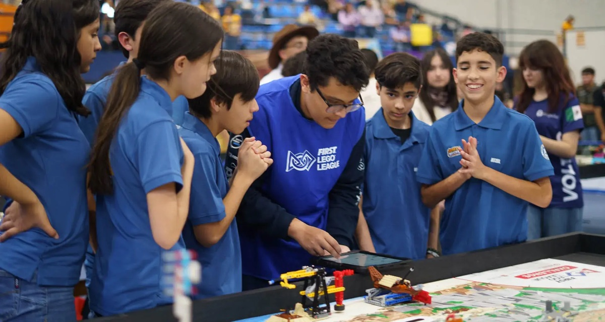
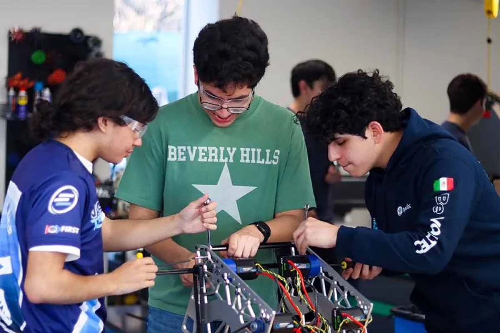
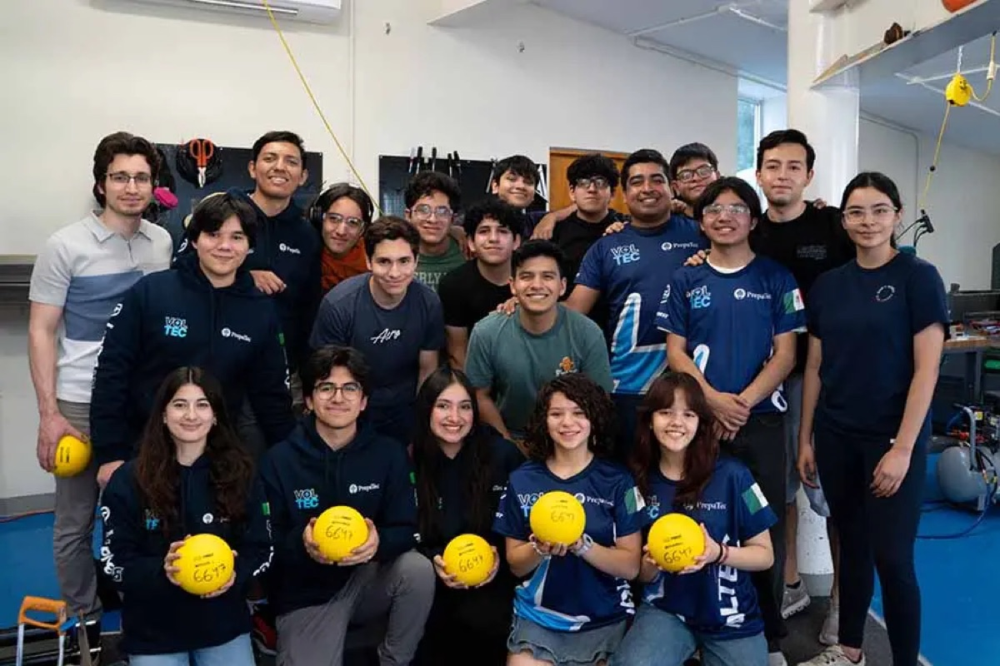
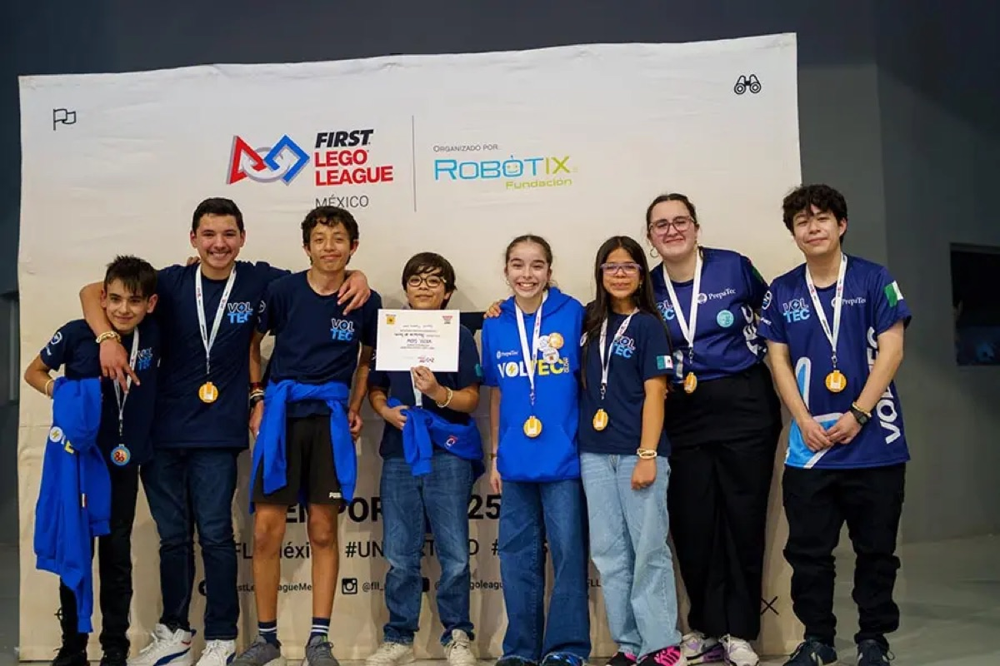
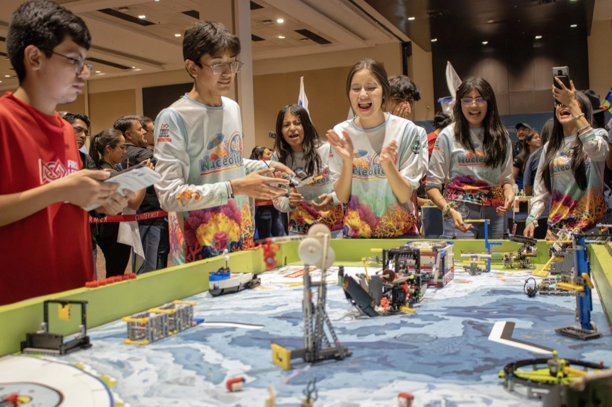
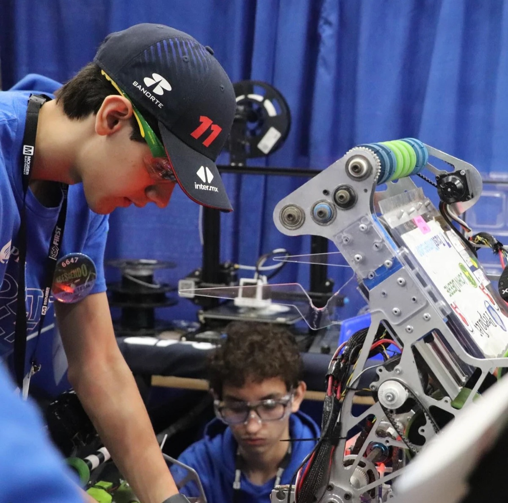
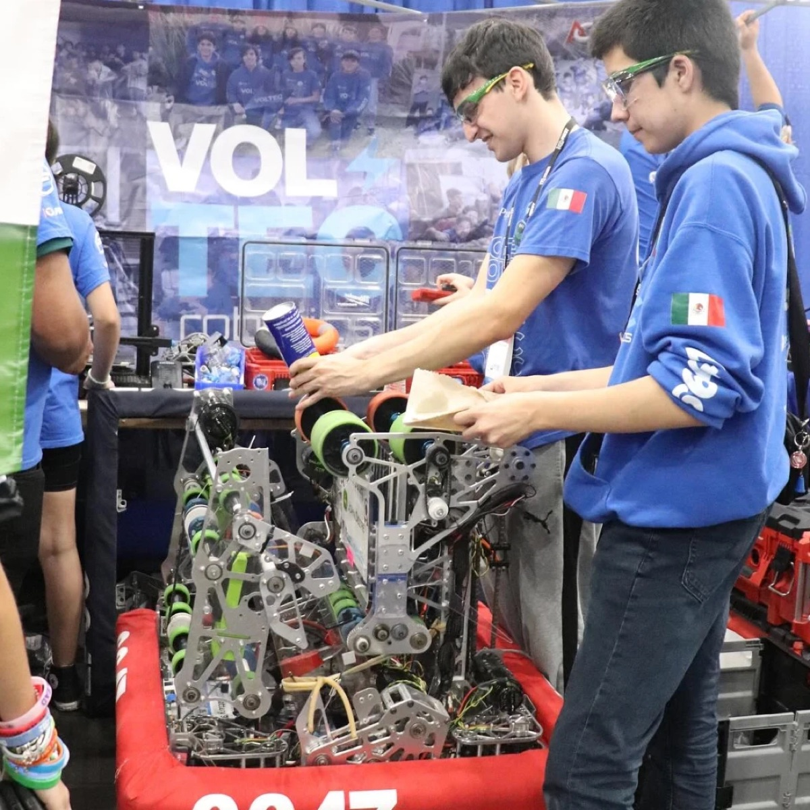
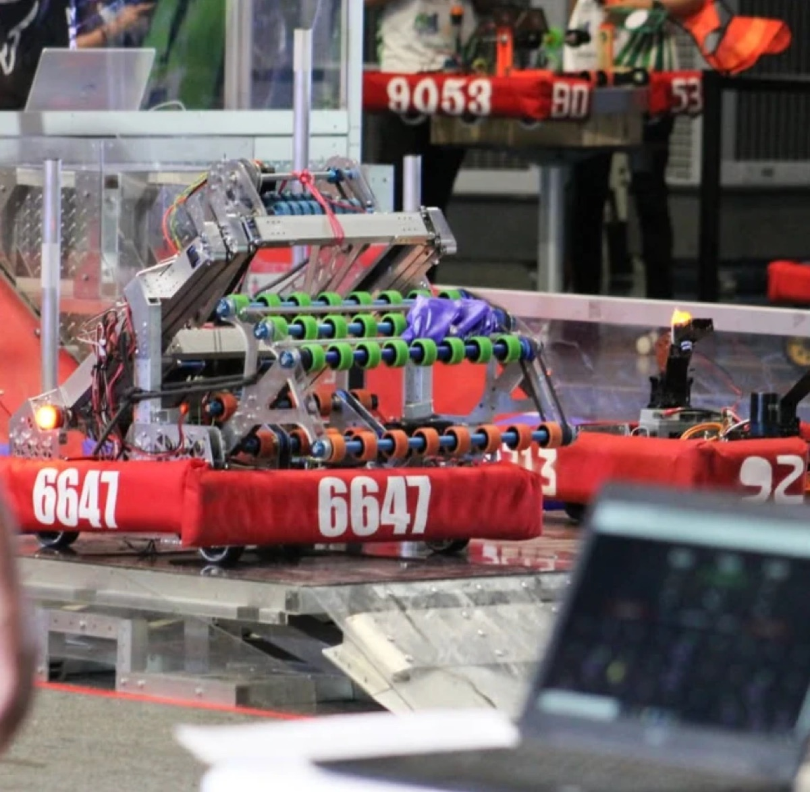
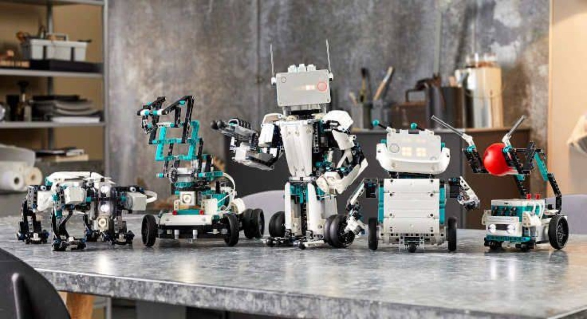

⚡ Programa del equipo Voltec 6647 · Prepa Tec
Clases sabatinas de robótica orientadas a competencias FIRST para niñas, niños y jóvenes de 6 a 16 años. Aprenden programación, electrica, y mecánica, construyendo en equipo, guiados por estudiantes y mentores del equipo representativo de robotica de PrepaTec.
Quiénes somos
Nosotros somos VOLTEC, el equipo representativo de robótica de PrepaTec Eugenio Garza Lagüera, y buscamos generar una cadena de impacto que reduzca la desigualdad de acceso a la educación STEAM en nuestro país.
Es por esto que creamos VOLTEC Institute; nuestro programa de robótica que ha ido creciendo junto a nuestro equipo durante los últimos 10 años, desarrollando las habilidades de nuestros estudiantes y brindándoles las herramientas para comenzar su camino en STEAM.
Somos parte de FIRST (For Inspiration and Recognition of Science and Technology), la comunidad de robótica juvenil líder en el mundo que ofrece aprendizaje STEM práctico e inspira innovación, genera confianza y prepara a los niños para la vida.
Nosotros buscamos guiar a nuestros alumnos a través de un camino por las categorías de FIRST: iniciando en FIRST® LEGO® League (FLL), avanzando a FIRST® Tech Challenge (FTC), y terminando en FIRST® Robotics Competition para al final regresar como mentores dentro de la comunidad.
En VOLTEC Institute impartimos clases enfocadas en las categorías de FLL y FTC, brindándoles la oportunidad tanto a estudiantes experimentados como inexpertos de ser parte de la comunidad FIRST y aprender desde cero o desarrollar sus habilidades en robótica a través de ella.
Las clases son impartidas por estudiantes y mentores que diseñan, construyen y programan robots para FIRST Robotics Competition, representando a México en escenarios internacionales.
Para más información sobre el programa de FIRST®, visita la página oficial: firstinspires.org
6647
Voltec
VOLTS OF LEADERSHIP
¿Por qué robótica?
A través de los proyectos que realicen, los estudiantes aprenderán a desarrollar ideas creativas y a encontrar diferentes formas de resolver problemas.
Fomentarán la curiosidad y el deseo de aprender mediante la exploración, la experimentación y la investigación, descubriendo nuevos conocimientos en cada reto.
Comprenderán que sus proyectos y acciones pueden generar un cambio positivo en su comunidad, utilizando la robótica y la creatividad para ayudar a resolver problemas del mundo real.
Aprenderán a respetar, escuchar y valorar las ideas de todos los integrantes del equipo, creando un ambiente donde cada persona pueda participar y aportar.
Desarrollarán habilidades de colaboración, comunicación y liderazgo, entendiendo que las mejores soluciones se logran trabajando juntos y aprovechando las fortalezas de cada integrante.
Creemos que el aprendizaje es más significativo cuando los estudiantes disfrutan el proceso. Por ello, cada actividad está diseñada para que aprendan mientras exploran, construyen, programan y se divierten.









Información práctica
9:30 – 12:30
Paquete semestral, de Septiembre a Febrero. Nuevo grupo cada semestre — pregunta por la próxima fecha de inicio.
$5,500 MXN
Por paquete de semestre (Septiembre a Febrero). Incluye materiales y acceso a instalaciones del Tec.
En línea o presencial
Llena el formulario en línea, o visítanos los sábados 15, 22 y 29 de agosto de 10:00 a 12:00 en la sede.
Formulario de inscripción →Programas por edad
Plan de estudios enfocado en competencias, con grupos reducidos por nivel.
Para mamás y papás
No. Los grupos se organizan por edad y nivel. En FIRST LEGO League se empieza con programación en bloques, pensada para quienes nunca han programado, y en FIRST Tech Challenge aprenden a programar y diseñar robots desde cero. Los instructores acompañan cada paso.
De 6 a 16 años: primaria y 1º de secundaria entran a FIRST LEGO League; 2º y 3º de secundaria a FIRST Tech Challenge, con opción de especializarse en Java o mecánica.
El donativo de $5,500 MXN cubre el semestre completo (Septiembre a Febrero) de sesiones sabatinas de 3 horas, el uso de materiales, el uniforme y las instalaciones de la Prepa Tec. No necesitas comprar equipo.
Dentro del salón no pueden ingresar el padre, madre o tutor, por lo que es necesario que las familias se aseguren que el alumno cuenta con la disciplina y comportamiento adecuado para permanecer dentro del salón sin su acompañamiento. En caso de querer permanecer dentro de la preparatoria, los padres de familia pueden esperar en la plaza común de la institución, ubicada al aire libre.
El plan de estudios está orientado a competencias FIRST. Los equipos que se preparan durante el semestre pueden participar en torneos y eventos de exhibición; los instructores informan fechas y requisitos a cada grupo.
En línea llenando el formulario de inscripción, o en persona los sábados de 9:30 a 12:00 en el edificio 2 de la Prepa Tec Eugenio Garza Lagüera.
Se llevará a cabo un diagnóstico a los alumnos aspirantes en donde se evaluará el nivel de experiencia en el área. Si el alumno no cumple con la edad mínima de la categoría, pero cuenta con la experiencia, caerá en consideración del padre, madre o tutor que el alumno comparta el salón de clase con compañeros mayores.
En este caso se avisaría de manera inmediata al padre, madre o tutor a cargo del alumno y la atención será responsabilidad de los mismos, haciendo uso de su seguro médico personal.
Sí, es permitido y recomendado que los niños traigan su propio almuerzo, ya que nuestra preparatoria no cuenta con servicios de alimentos los fines de semana (lo único que se encuentra son máquinas expendedoras con snacks saludables). Cualquier alimento que el alumno lleve o compre puede consumirse durante su receso de 30 minutos, de 11:00 a 11:30, todos los sábados.
¿Tienes otra duda? Escríbenos por Instagram @voltec6647 y con gusto te respondemos.
Cupos limitados por semestre! Aparta el de tu hijo o hija hoy.
Inscribir a mi hijo/a ⚡También puedes inscribirte en persona: sábados 9:30–12:00 · Edificio 2 · Prepa Tec Eugenio Garza Lagüera